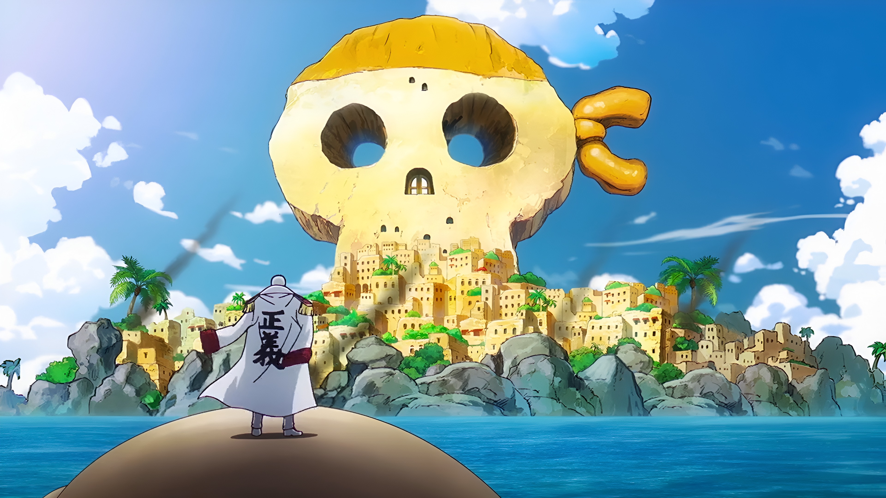

En un mundo donde el 80% de la humanidad nace con "Dones" (superpoderes), Izuku Midoriya es parte de la desafortunada minoría que nace sin ellos. A pesar de esto, su sueño de convertirse en un héroe es inquebrantable. Tras un encuentro fortuito con su ídolo, el héroe número uno All Might, Izuku hereda un poder inimaginable. Ahora debe aprender a controlarlo en la U.A., la academia de héroes más prestigiosa, mientras una oscura liga de villanos amenaza con destruir la paz mundial. Es una historia sobre esfuerzo, legado y lo que realmente significa ser un héroe.
Gon Freecss descubre que el padre que creía muerto es en realidad un legendario "Cazador", un miembro de la élite de la humanidad especializado en rastrear tesoros, bestias exóticas e incluso a otras personas. Para encontrarlo, Gon abandona su hogar y se inscribe en el letal Examen de Cazador. En el camino hace amigos entrañables (y enemigos aterradores) y descubre el "Nen", una energía mística que dicta la supervivencia. No te dejes engañar por su inicio colorido; es uno de los animes más oscuros, estratégicos e impredecibles que existen.

Gabimaru "el Vacío", un frío y despiadado ninja condenado a muerte, recibe una oferta imposible de rechazar: un perdón absoluto por todos sus crímenes. ¿La condición? Debe viajar a una isla mística y supuestamente paradisíaca para recuperar el Elixir de la Vida para el Shogun. Acompañado por su verdugo, descubrirá que la isla no es un paraíso, sino una pesadilla psicodélica infestada de monstruos grotescos y dioses letales. Es una carrera mortal por la supervivencia donde cada paso en falso garantiza un final sangriento.

"Riqueza, fama, poder". El Rey de los Piratas, Gol D. Roger, lo consiguió todo y, antes de ser ejecutado, reveló que su mayor tesoro, el "One Piece", estaba escondido en algún lugar del océano más peligroso del mundo: el Grand Line. Años después, Monkey D. Luffy, un chico cuyo cuerpo se volvió de goma tras comer una Fruta del Diablo, se lanza al mar para encontrarlo. Es una aventura épica de proporciones titánicas, llena de misterios mundiales, gobiernos corruptos y una tripulación de inadaptados que te robarán el corazón.

Ambientada en la violenta era de los vikingos, sigue la historia de Thorfinn, el hijo de uno de los guerreros más grandes que jamás haya existido. Cuando su padre es asesinado a traición por un astuto líder mercenario llamado Askeladd, el mundo del niño se derrumba. Impulsado por una sed de venganza ciega, Thorfinn se une a la misma tripulación de su enemigo, soportando guerras brutales y masacres solo para ganarse el derecho a un duelo a muerte con él. Es un drama histórico brutal, visceral y profundamente emocional sobre la redención y la búsqueda de la paz.

En un mundo donde la magia lo es todo, Asta y Yuno son dos huérfanos con el mismo objetivo: convertirse en el Rey Mago, el caballero más fuerte del reino. Mientras Yuno es un prodigio bendecido con un inmenso poder mágico, Asta nació sin una sola gota de magia. Justo cuando toda esperanza parece perdida, Asta recibe un rarísimo grimorio oscuro de cinco hojas que le otorga el poder de la "Antimagia". Es un anime que toma todos los clichés del género y los acelera a fondo, entregando batallas épicas, un ritmo frenético y una rivalidad legendaria.

Light Yagami, un brillante y aburrido estudiante de secundaria, encuentra un misterioso cuaderno negro llamado "Death Note". Este objeto sobrenatural le otorga el poder de matar a cualquier persona cuyo rostro y nombre conozca. Convencido de que el mundo está podrido, Light asume el alias de "Kira" y comienza una cruzada para erradicar a los criminales y crear una utopía donde él sea el dios. Sin embargo, sus acciones atraen la atención del excéntrico e infalible detective conocido como "L". Comienza así un trepidante e intelectual juego del gato y el ratón donde cualquier error significa la muerte.

Doce años antes de la historia, el temible Zorro de Nueve Colas atacó la Aldea Oculta de la Hoja. Para salvar a su pueblo, el líder sacrificó su vida para sellar al monstruo dentro de un recién nacido llamado Naruto Uzumaki. Marginado y temido por todos debido a la bestia que habita en su interior, Naruto crece como un huérfano solitario y problemático. Su mayor sueño es convertirse en Hokage, el líder y ninja más fuerte de la aldea, para finalmente ser reconocido y respetado. Es una historia épica de perseverancia, amistad, ninjutsu y la voluntad de nunca rendirse.

Ichigo Kurosaki es un adolescente aparentemente normal, salvo por el hecho de que puede ver espíritus. Una noche, su familia es atacada por un "Hollow", un alma corrupta y monstruosa. En medio del caos, Ichigo conoce a Rukia Kuchiki, una Segadora de Almas (Shinigami) que resulta gravemente herida al intentar protegerlos. Para salvar a los suyos, Ichigo acepta tomar los poderes de Rukia, transformándose él mismo en un Shinigami. Ahora, con una espada gigantesca y nuevas responsabilidades, debe purificar a los Hollows y proteger tanto el mundo humano como el espiritual. Es un clásico del shonen cargado de espadas, transformaciones y batallas memorables.
format(webp))
Rintaro Okabe, un excéntrico estudiante universitario que se autodenomina "científico loco", pasa sus días inventando extraños artefactos en un viejo laboratorio en Akihabara. Por pura casualidad, descubren que uno de sus inventos, un microondas modificado, es capaz de enviar mensajes de texto al pasado. Al experimentar con esta tecnología, alteran inadvertidamente el flujo del tiempo, desencadenando una serie de eventos trágicos y atrayendo la atención de una siniestra organización secreta. Es un thriller de ciencia ficción brillante que mezcla viajes en el tiempo, suspenso psicológico y un profundo impacto emocional.

Shigeo Kageyama, apodado "Mob", es un estudiante de secundaria que posee habilidades psíquicas inmensurables. Sin embargo, para vivir una vida normal y evitar que sus poderes destructivos se salgan de control, Mob suprime constantemente sus emociones. Trabaja bajo la tutela de Reigen Arataka, un carismático pero fraudulento psíquico que se aprovecha de los talentos del chico. Mientras Mob intenta lidiar con los problemas típicos de la adolescencia, diversas organizaciones pondrán a prueba su límite emocional del 100%. Es una obra visualmente espectacular y sorprendentemente conmovedora sobre el crecimiento personal.

En un futuro donde el Imperio Sagrado de Britannia ha conquistado Japón y lo ha rebautizado como el "Área 11", Lelouch vi Britannia, un príncipe exiliado que vive de incógnito, busca venganza contra su propio padre, el Emperador. Su vida cambia drásticamente cuando conoce a la misteriosa chica C.C., quien le otorga el "Geass", el poder absoluto de obligar a cualquiera a obedecer sus órdenes. Asumiendo la identidad del enmascarado "Zero", Lelouch lidera una rebelión para derrocar al imperio en un complejo e impredecible juego de ajedrez político. Es un thriller deslumbrante lleno de giros argumentales, mechas y estrategia militar.

En un mundo donde portales misteriosos conectan la Tierra con mazmorras llenas de monstruos, ciertos humanos han despertado habilidades mágicas para combatirlos: los "Cazadores". Sung Jin-woo es conocido como el cazador más débil de la humanidad, arriesgando la vida en misiones de bajo rango solo para sostener a su familia. Sin embargo, tras sobrevivir milagrosamente a una sangrienta trampa en una mazmorra doble, despierta con una habilidad única: una interfaz flotante que solo él puede ver y que le permite "subir de nivel" sin límites. Es una historia electrizante sobre superación personal, combates brutales y el ascenso hacia un poder absoluto.
format(webp))
Años después de salvar al mundo, Goku lleva una vida tranquila en la Tierra junto a su familia, hasta que la llegada de un invasor alienígena revela una verdad impactante: Goku pertenece a los Saiyajin, una feroz raza guerrera casi extinta. A partir de ese momento, Goku y sus amigos deben entrenar más allá de sus límites para defender el universo de tiranos galácticos, androides asesinos y entidades demoníacas de poder colosal. Es la obra emblemática que definió el género de artes marciales y batallas de escala planetaria a nivel mundial.

Kenzou Tenma es un brillante neurocirujano japonés que trabaja en Alemania. Un día, decide priorizar la ética médica sobre la política del hospital y salva la vida de un niño herido de bala llamado Johan, en lugar de operar al alcalde. Años más tarde, Tenma descubre con horror que aquel niño a quien salvó la vida ha crecido para convertirse en un psicópata frío y despiadado que orquesta crímenes atroces sin dejar rastro. Sintiéndose responsable, Tenma abandona su carrera y emprende una cacería por toda Europa para detener al monstruo que él mismo ayudó a crear. Es un thriller psicológico realista, denso y profundamente humano.
En un futuro posapocalíptico, la Tierra es atacada constantemente por gigantescas entidades desconocidas llamadas "Ángeles". Para combatirlas, la organización NERV utiliza los Evangelion (EVA), colosales biomecanismos que solo pueden ser piloteados por adolescentes compatibles mediante una sincronización mental directa. Shinji Ikari, un joven marcado por la soledad y el abandono, es forzado por su padre a subirse a una de estas unidades. A medida que los combates se vuelven más encarnizados, la historia se transforma en una exploración psicológica sobre el trauma, la soledad y la naturaleza de la existencia humana.